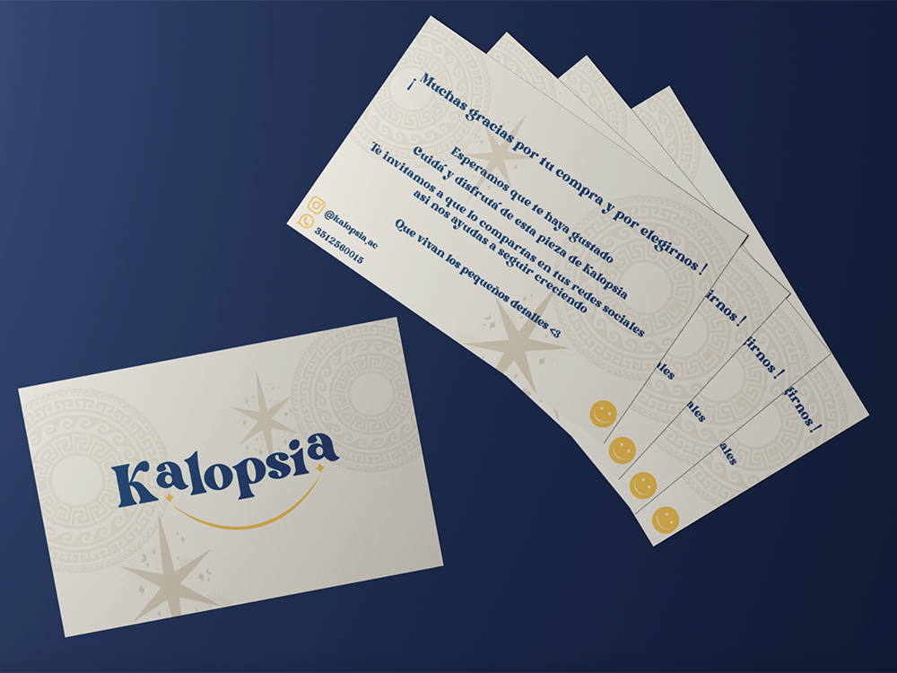
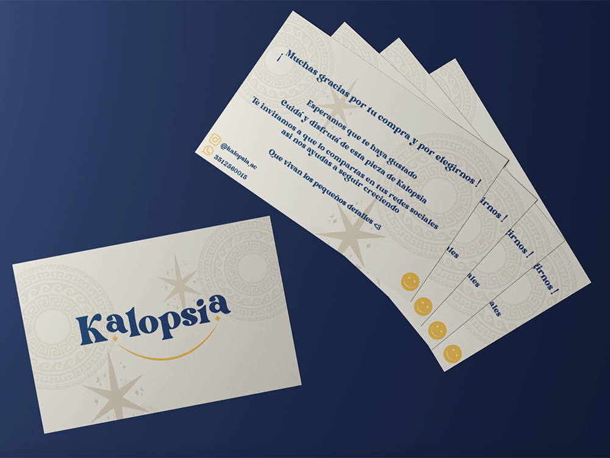

NOSOTROS

Esto es kalopsia, en donde se aprecia y se valora el arte de las pequeños detalles y las simples cosas que ofrece la vida día a día.
Trabajamos con mucho amor y pasión para hacer posible, por fin, este emprendimiento de accesorios hechos a mano.
Encontrarán diseños ya armados por Kalopsia y también podrán crear y dejar llevar su imaginación con los suyos. Personalizadas y únicas.
Esperamos que amen este proyecto tanto como lo ama Kalopsia.
 

Qué es Kalopsia?
La palabra Kalopsia [ka-lop-se-a] proveniente del griego es la ilusión de que las cosas sean aún más hermosas de lo que ya son. Kalopsia es ver con otros ojos, cambiar de perspectiva y fijarse en los pequeños detalles. Elegimos esta palabra debido a que representa perfectamete algo que nosotros hacemos desde hace ya un tiempo… apreciar la simpleza y romantizar las pequeñas cosas de la vida como un simple accesorio.
Kalopsia es algo que va más allá de una marca. Es un momento que muchos de nosotros pudimos haber experimentado alguna vez en nuestras vidas… detenerse, disfrutar y mirar más allá de lo que ven nuestros ojos. Algo puede ser lindo, pero cuando te detenés a observarlo quizás se convierte en algo aún mas lindo de lo que ya lo era.
Todos nuestros productos están realizados con nuestros ingredientes principales: amor y dedicación. Buscamos hacerlos felices decorando sus cuerpos con nuestras piezas hechas a mano y personalizadas. Te invitamos a vivir la experiencia Kalopsia y esperamos que puedas disfrutarlo tanto como nosotros lo hacemos.